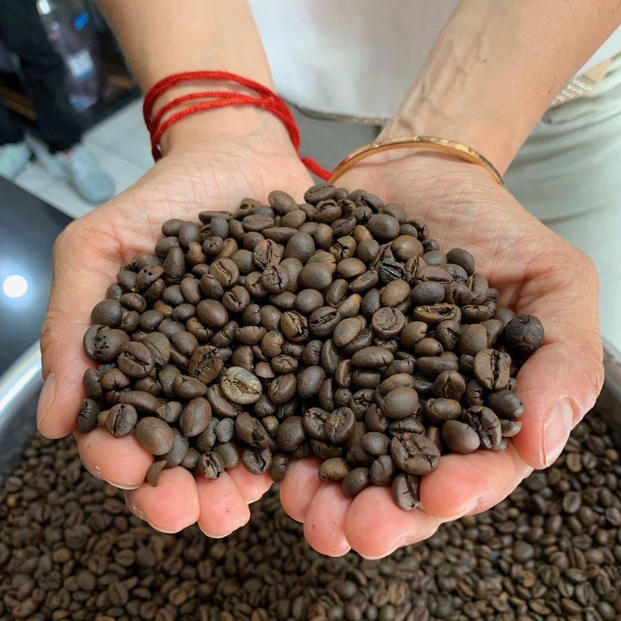
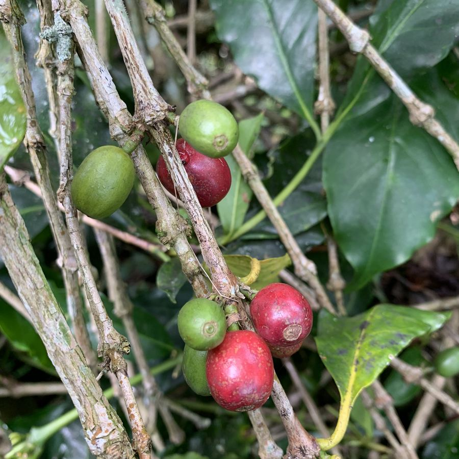
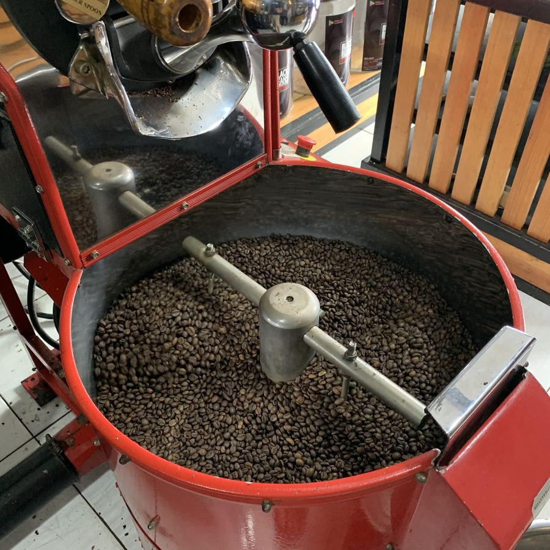
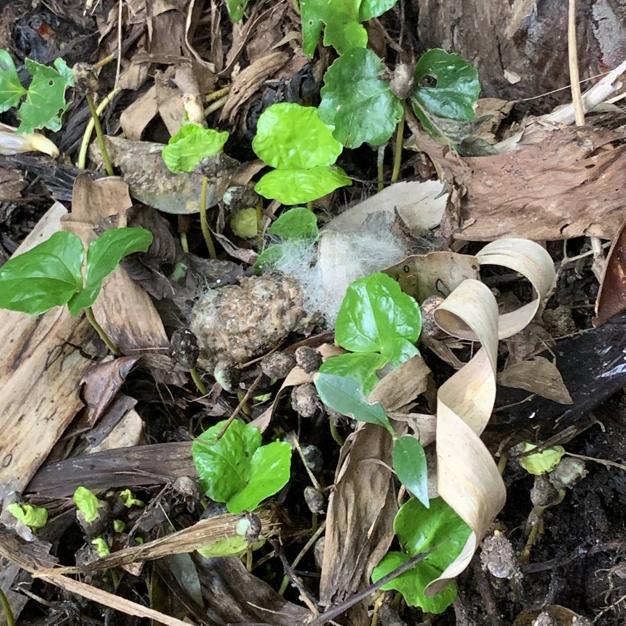
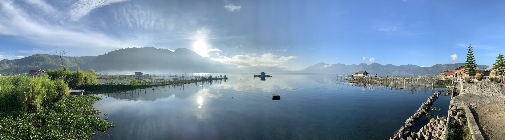

True Luwak s'engage à vous fournir le café Luwak d'origine sauvage, dans toute son authenticité et son unicité. Ce café très rare est produit par la civette en Indonésie. Les civettes vivent librement dans la jungle sur les hauts plateaux de Gayo, se nourrissant de leurs fruits préférés. Nous vous garantissons que chaque lot de nos grains est authentifié.
Afficher plus
Le café Luwak a été mis au point par les Indonésiens lors de la colonisation par la compagnie néerlandaise des Indes orientales. Lorsque les Néerlandais apportent le café en Indonésie au XVIIe siècle, ils interdisent aux locaux de cueillir les cerises de café des plantations. Les Indonésiens ne récupèrent donc que celles qu'ils trouvaient par terre…
Afficher plus
Chaque phase de notre processus est contrôlée par un artisan dont la connaissance du café et de son terroir a été transmise de génération en génération.
En savoir plus
Nous nous engageons à fournir du café Luwak d'origine 100% sauvage.
En savoir plus
L'histoire de True Luwak est certainement l'une des plus belles histoires du café. D'un tout petit grain de café est née une belle aventure de partenariat entre la France et l'Indonésie.
Notre café Arabica Luwak sauvage certifié est le café le plus rare et le plus prisé au monde. Ce café de luxe est maintenant disponible pour les plus grands amateurs de café.